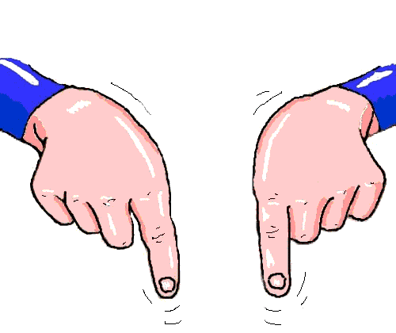

No dejes la
tarea
y
proyecto para último
dia.
No calificaré el código,
que podrás
lograr con la IA, sino que las
evidencias
de que la guiaste para conseguir mucho
más que lo descrito en la propuesta
No faltes el lunes, seguiremos usando
Processing, pero en modo Python